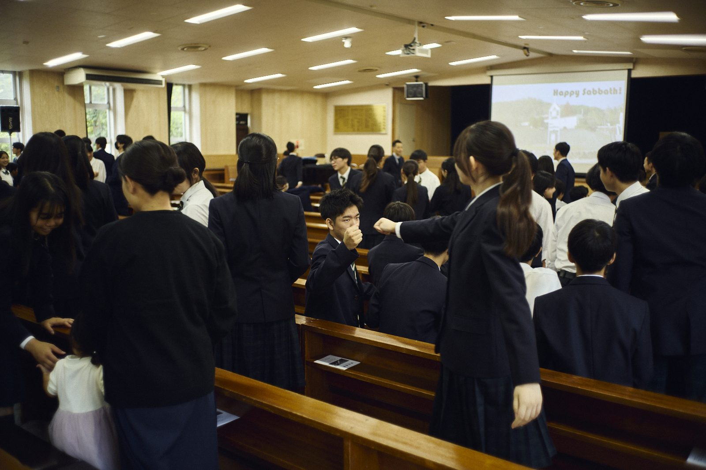

Believe
何のために、生きるのか。
BELIEVE ｜ 霊性自分は神様から愛されている存在だと知り、他者を自分のように愛することを学ぶ。

礼拝と安息日
寮では朝晩に礼拝の時間を持ち、1日の始まりと終わりに聖書の言葉に耳を傾けます。土曜日は安息日として、礼拝の時間にしています。
聖書の授業
中学は週3時間。高校では2年次からキリスト教コア探求として、CMM（クリスチャン医療伝道クラス）、ACTS（伝道者養成クラス）、教理探究を学びます。
FAITH JOURNEY
信仰の歩み
入学した学年から、一人ひとりの歩みが始まります。
STEP 1
神との出会い
STEP 2
神の愛を理解する
STEP 3
神の愛に応える
FOR FAMILIES
キリスト教を知らないご家庭へ
キリスト教の背景がなくても、大歓迎です信仰に触れる時間が、毎日の生活の中心にあります洗礼は卒業の条件ではありません
本校には、キリスト教の背景を持たないご家庭からも多くの生徒が入学しています。初めて聖書に触れる方も、どうぞ安心してお越しください。
一方で本校は、セブンスデー・アドベンチスト教会の教育理念に基づく学校です。朝夕の礼拝、聖書の授業、土曜日の安息日など、他のミッション系の学校と比べても、信仰に触れる時間が生活の中心にあります。この点は、あらかじめご理解ください。
私たちが大切にしているのは、信仰を押しつけることではなく、人生の「根っこ」を育てること。何のために生きるのか、人とどう関わるのか。聖書の教えを、人生を生きるための哲学、ぶれない軸として受け取ってもらえたらと願っています。
在学中に自らの意思で洗礼を受ける生徒もいますが、洗礼を受けないと卒業できない、ということはありません。ご理解のうえで、ぜひ入学をご検討ください。ご不安なことは、説明会や個別相談でどうぞお気軽にご相談ください。
INVITATION
読むだけでは、三育はわからない。
ひとつでも気になったら、一度キャンパスへ。見学も、宿泊体験も、相談だけでも大丈夫です。